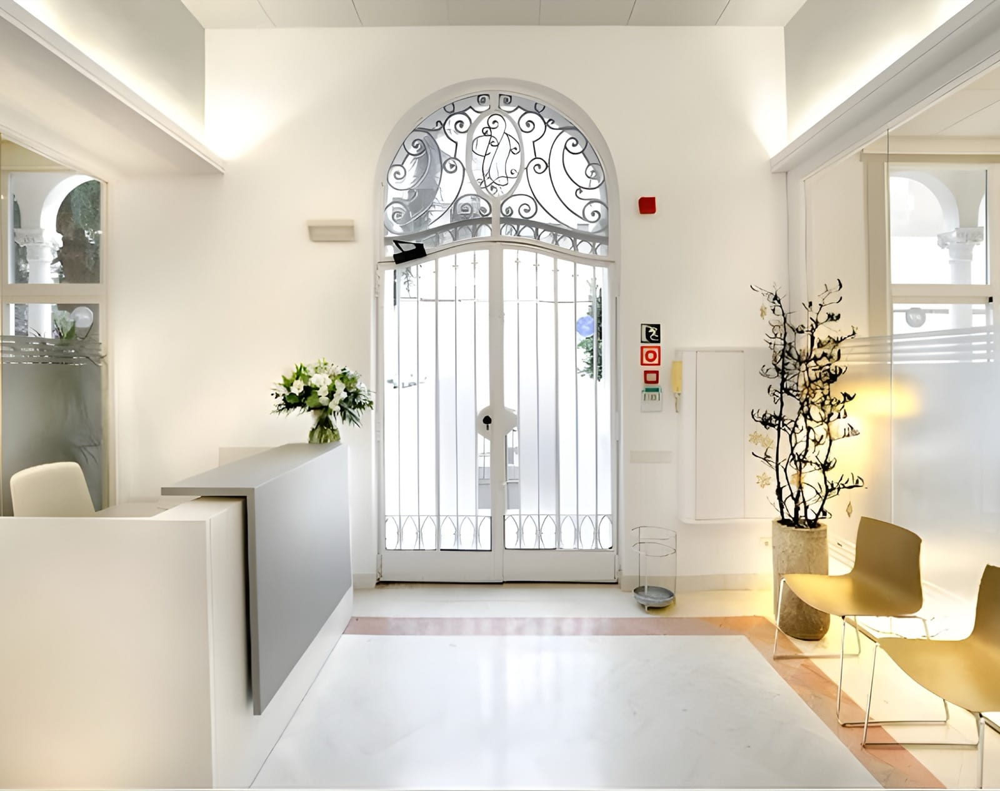

Dirección de diseño del uniforme
Uniformes a medida para clínicas dentales: construir un vestuario de equipo alineado con la marca en Barcelona

Cuando una clínica dental premium evoluciona su imagen, el cambio no se detiene en el logotipo, la web y el interiorismo. El vestuario del equipo también forma parte de esa transformación. En entornos de alta exigencia, cada detalle visible afecta a la confianza y a la calidad percibida.
Este proyecto en Passeig de Gracia partía de un objetivo claro: ir más allá de los códigos visuales de la clínica clásica y crear un entorno más contemporáneo, más cuidado y más coherente con la marca.
Por qué las clínicas premium replantean sus uniformes
En el ámbito sanitario, la competencia se percibe no solo a través de los instrumentos y las titulaciones, sino también a través del espacio, el comportamiento y la presentación del equipo. La percepción empieza en recepción y continúa en las salas de espera y en las transiciones entre los espacios públicos y clínicos.
En este contexto, el uniforme no es un detalle estético. Es una parte operativa de la experiencia del paciente.
Partir del espacio, no del catálogo
La dirección del vestuario se construyó a partir del contexto real: materiales, paleta, luz, distribución y atmósfera del lugar. En vez de añadir un logotipo a una prenda genérica, trasladamos el lenguaje del espacio a prendas coherentes.
El objetivo era mantener la autoridad clínica suavizando al mismo tiempo los códigos visuales más rígidos.
Traducir la marca en prendas reales
Con un equipo reducido, fue posible trabajar con precisión en torno a roles, preferencias y ajuste. No se trataba de un programa masivo de uniformes, sino de un sistema coherente para distintas funciones.
El equilibrio que se buscaba estaba claro: profesional pero no rígido, limpio pero no frío, contemporáneo pero no guiado por tendencias. Los detalles constructivos se desarrollaron siguiendo esa dirección.
Selección de tejidos para un uso clínico real
En un entorno dental, el tejido tiene que funcionar tanto a nivel visual como operativo: transpirabilidad, mantenimiento de la forma, estabilidad del color tras lavados frecuentes y una apariencia limpia bajo una iluminación intensa.
Las soluciones más eficaces suelen surgir de mezclas equilibradas: fibras naturales para la comodidad y el tacto, fibras técnicas para la durabilidad y el mantenimiento.
Más allá de la estética dental estándar
Los uniformes tradicionales suelen comunicar solo una funcionalidad mínima. Aquí, el objetivo era preservar la seriedad clínica y, al mismo tiempo, alinear la imagen del equipo con la arquitectura y el posicionamiento premium.
Del desarrollo a la producción
Una vez definida la dirección, el proyecto pasó a muestreo y desarrollo: correcciones de ajuste, largos, bolsillos, cierres y verificación del comportamiento de los materiales en uso real. Esta fase determina la calidad cotidiana del sistema.
Conclusión
Este caso demuestra que un vestuario de equipo puede apoyar de manera tangible la evolución de una marca incluso en el sector sanitario. El resultado no es moda aplicada a una clínica, sino un sistema de prendas coherente en presentación, comodidad operativa, rendimiento textil e identidad espacial.
Para los negocios de servicios que buscan una mayor coherencia perceptiva, se trata de una intervención práctica con un gran impacto. Consulta también los casos de bienestar y hostelería premium.